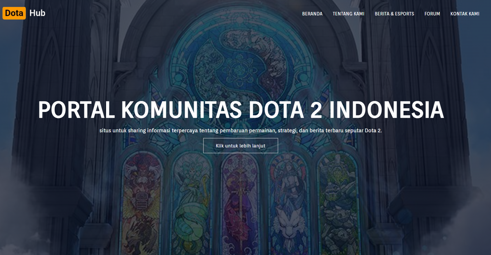
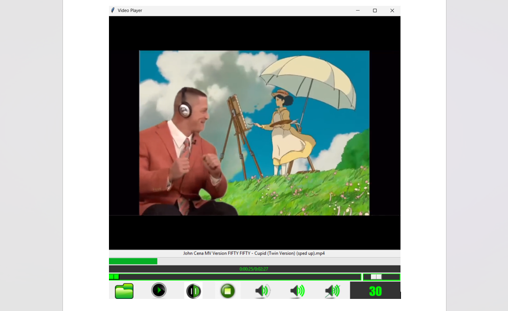
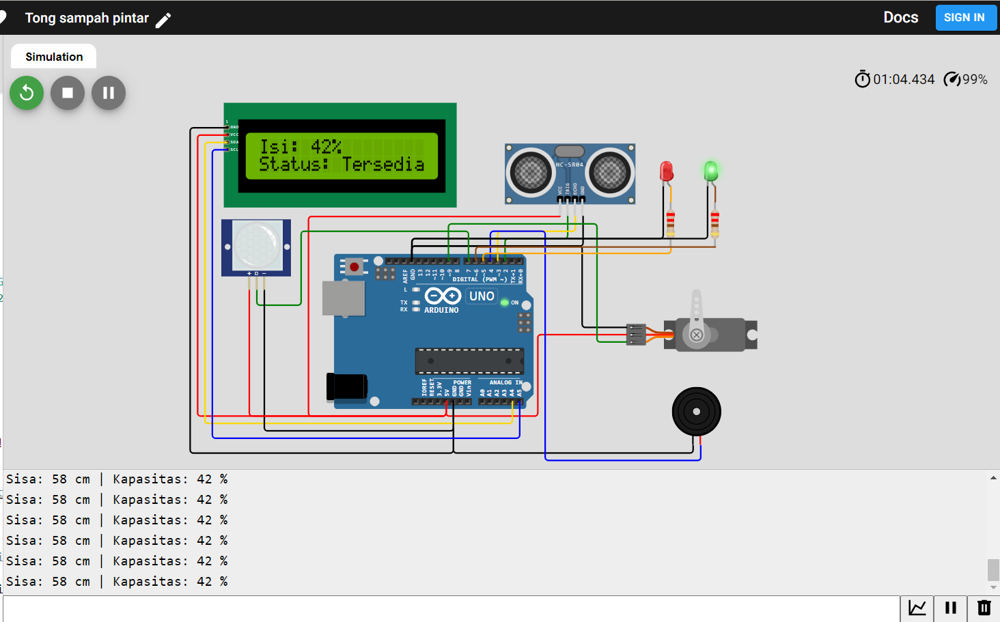

Simpel Website Komunitas Game

Desain dan pengembangan website komunitas Game menggunakan HTML, CSS, dan JavaScript.
Video Apps berbasis Python-vlc

Aplikasi pemutar video sederhana dengan fitur play,
pause, stop, dan buka file. Dibuat menggunakan python-vlc.
Proyek IoT - Tempat Sampah Pintar

sistem tempat sampah berbasis sensor ultrasonik
HC-SR04, sensor PIR dan mikrokontroler (Arduino) dengan
tambahan servo, buzzer, dan indikator LED. Proyek ini
bertujuan untuk meningkatkan kesadaran lingkungan dan
efisiensi pembuangan sampah.